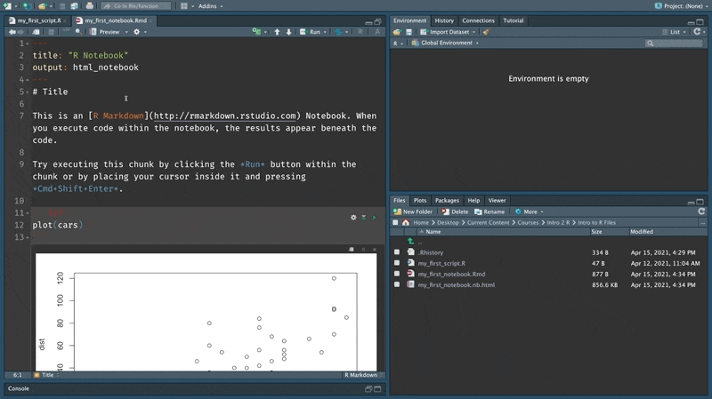

Chapter 2 Get setup
In this chapter, we will install R and RStudio and get familiar with executing some code.
2.1 Install R
Our very first step is to download and install R from CRAN - a repository for R. Download and install the version of R that corresponds to your operating system.
You can think of R as an interpreter between you and your computer. Once R is installed, you can write instructions using the R programming language, which are then translated by R into a language that your computer will understand.
In the real world, using an interpreter is only possible if you speak a language that they understand. The same goes here. Our job as programmers is to write R programs that communicate clearly and without error so that these instructions can be translated effectively and relayed to the computer. In the next step we will install RStudio which is a tool that makes this task easy.
2.2 Drive a Ferarri
In theory, you could use any text editor (like Notepad or MS Word) to write R programs. But this would be like using a kitchen knife to perform a surgery. It might get the job done, but it won’t be easy or pretty.
When you install R on your system, it also installs a code editor that can be used to write R programs. While this is a more appropriate tool than a text editor it is a bit basic. What we need is a Ferrari - a feature rich code editor that is built to write and manage R programs. This is what RStudio offers.
RStudio is free and packed with features that make writing code in R a breeze. It also comes with a lot of other convenient features that make it really easy to manage R projects and publish your work.
You can download RStudio from the following link. Once you have R Studio installed, open it up to write your first few lines of code.
2.3 Meet the console - a glorified calculator
Let’s print(“hello world”) as our first command.
print("Hello World!")The right angle bracket > with blinking cursor shows the place where we can enter commands. You should follow along with the next sequence of steps so that you get familiar with typing commands in R.

Let’s try out a few basic arithmetic operations. Enter the arithmetic as shown below one line at a time.
2 + 2
320 * 987
10 > 12The pane in RStudio that we are currently using is called the console. You can think of the R console as a calculator on steroids. Similar to the calculator it allows us to enter commands and it prints the results of those below the command.
2.4 Dealing with errors
Computers, unlike humans are finicky and precise about language. We can infer meaning from jumbld up wrds or incomplete senteces; while a computer will protest and complain even if a period is not where it is supposed to be. Think about them as an interpreter who will refuse to translate what you said if you did not use the correct grammar. This means that at some point we will invariably type in something that yields an error. When that happens R will return an error message like the one shown below that indicates why there was an issue with executing a particular line of code.

Errors can be frustrating if you are new to coding. They are often cryptic and you might not be able to resolve them immediately.
But that is OK. Errors, are a part and parcel of programming. And resolving them is a key programming skill. So when you get an error, take a deep breath and remember that this is an opportunity to learn something new.
Often the best strategy to find a solution is to search for the error online to see if others have resolved it with someone else’s help. Initially even these solutions will seem like incoherent technobabble.
And right now, you might simply copy paste these solutions and move on, but, with practice and patience you will learn to troubleshoot effectively and learn from these errors. And hey, you might even come to enjoy the puzzle solving experience that an odd error brings. :smile:
2.5 Saving code
So far, we have typed commands into the console. But you will notice that there is no option to save the code that we have typed into the console.
Most projects would require files that can be saved so that we can work on them over a period of time and execute them a multiple times without having to type them out each time.
We can do this by placing code inside a file. There are many different types of files but, for now let’s start with a simple R script.

Now we need to get all the commands that we tried out earlier into this script. One option would be retype all the commands but that is an extremely tedious way of doing this. Instead, we can access all the previously executed code using the history tab as shown below and copy it over to the source file.
We don’t need the line that generated the error, so let’s remove that and save the file. I am calling it my_first_script. But you can call it anything you want.

The files tab in RStudio shows all your files and folders. Navigate to the folder you saved the script in to check if it is actually there.
2.6 Executing a script
Once you have saved your file, you can run it as many times you would like without having to retype any of the commands. There are two ways you can do this. The first is by stepping through the script one line at a time using the run button.

The second is by running the full script by sourcing the file. Click on the dropdown instead of the button itself. You have two options - source with echo or the default source (you can ignore the third option for now). Echo, simply means to print outputs on to the console. The default option of Source will run all the lines of the code without printing anything to the console. Use the Source with echo option for this exercise.
Notice that the source command generates a new line in the history tab. This is the command that is used to source a file. Now we can close the script and paste this command from the history tab using the To console button and run it to execute all of the code within that script as shown below. Also notice how I use the broom üßπ icon to clear the code in the console before sourcing the script.

2.7 RStudio look and feel
RStudio comes with tons of options to customize how it looks and feels. You can customize the different tabs, choose a different font, apply a darker theme etc. I personally like a dark theme, so I am going to switch over to that for the rest of this book.
Play around with the options here to find a look that you like.
2.8 The magical world of notebooks
Scripts make it easier to write and maintain code and are great for storing code that you would like to execute multiple times. But they have a limitation - they are not suited for interactively exploring data.
A significant portion of data science projects are spent exploring and making sense of the data. This can often require weaving text together with the code and its output. You would also want to share your work with your colleagues and being able to think out aloud in your documents while also presenting the code and its outputs makes your work easy to understand and replicate. Scripts don’t allow us to do this effectively but notebooks do.
R notebooks are built using R markdown. R markdown is an extremely versatile format that can be used to create all kinds of outputs like books, websites, presentations, word documents etc. This book is written using R markdown.
Let’s create a notebook using the same drop down menu as that for script. The notebook opens with some dummy text that is a good template to get started.
2.8.1 Anatomy of an R markdown document
An R markdown document is typically composed of the following components.
- YAML: At the top, we have a YAML (Yet Another Markup Language) header that is identified by the three
---at the top and bottom. YAML is used to set the metadata for a R markdown document. For instance, in the document we just opened it sets the title of the notebook and specifies that the output format is anhtml_notebook. There are several other options that can be specified in the header that will determine the output format (pdf, word, book, presentation etc), the design, date of publishing etc. But for now let’s keep things simple and leave everything as is. - Markdown: Markdown is a text markup language. Markup is simply annotations next to text that instruct the editor to render the text a particular way. For instance,
##next to some text would indicate that the particular line of text should be rendered as a type 2 heading. This is similar to what you would do in a word processor where you would use the drop down to select a particular heading type. The only difference being that in an editor like MS Word the changes are instantaneously visible to the person who is writing, while with markdown you will only be able to see the changes when you ‘knit’ the document. We will see how to do that shortly. - Code: You can insert new chunks of code into your notebooks using
Ctrl + Alt + IorCMD + Opt + Iin Mac. While we will be primarily using R code, you could insert chunks of code in other languages like Python, C++, SQL also.

2.8.2 Working with a notebook
We will do most of the exercises and work for this book using notebooks. So let’s get comfortable with the basic workflow for using the.
Let’s start by saving the notebook and previewing it as shown below. You can give the notebook any name you would like.
The preview immediately launches the notebook in a different window showing the text along with the code.
Next, in the files tab, navigate to the folder where you saved the notebook. Notice, how the file section in R Studio has two files. One that has the extension .Rmd indicating an R markdown file and another with the extension .nb.html indicating an HTML notebook, which is the output format that is in the YAML header. This file was created when you ‘knit’ the R markdown notebook. Knit and preview are the same for our purposes right now.
Try opening this file on your computer and see how it looks. The contents of this notebook are similar to webpages and can be shared with colleagues either as standalone files or as a hosted standalone webpage (we will explore how in a later section).
The preview updates whenever we make any changes to the notebook and save it. Let’s see it in action. We can run a chunk of code by pressing the play button. This chunk of code generates a plot that is rendered below it. When we save the document and go back to the preview you will notice that it is automatically updated to include this plot.

Let’s update some markdown text as well to see how that renders. I am going to create a type one header. The number of # indicate the level of a header in markdown. Once saved the preview will now show the title styled as type one heading.

Let’s add some more text.

If you click on the preview dropdown, you will also notice all these other output formats that you could knit into. Try out the pdf option.

Keep this cheatsheet as you use this book.
2.9 Exercise
- Create a unordered bulleted list instead of an ordered one.